Zyzygy, Inc. · Goldthwaite, Texas
Door a Day
The Official User Guide
A surprise behind every door. For iPhone, iPad and Android.
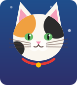
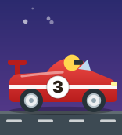
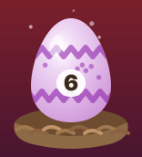
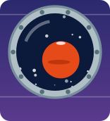
Coming this holiday season to the App Store and Google Play
Written for parents, grandparents, couples and anyone who can't wait. The door art in this guide is the app's own drawings.
Before we beginWelcome! (Please don't open the guide early.)
Door a Day turns the days before something wonderful into a row of little doors. Each door unlocks at midnight on its day and opens to a note, a joke, a fun fact or a challenge, along with its own animated surprise. The last door gets the big finish.
You can make one for Christmas, Hanukkah, Halloween, a wedding, a new baby, a big birthday, a trip, a retirement, or any date you like. Then you can keep it for yourself or send it to someone as a gift.
What's inside
- Getting started
- How the doors work
- The 15 calendar types
- Make it yours: Settings
- Door styles (meet the cats and dogs)
- Help me write the notes
- Daily reminders
- Sharing and the gift lock
- My Calendars
- What unlocking adds
- Our philosophy and your privacy
- Troubleshooting
- FAQ
- Say hello
Chapter 1Getting started (the easy part)
- Once it's released, install the app from the App Store (iPhone and iPad, iOS 17 or later) or Google Play (Android 8.0 or later). There's no account to make and nothing to sign in to.
- Open it. On iPhone and iPad you'll see a sample calendar for the season, so you can tap around right away. On Android you start in My Calendars.
- Make your own. Open My Calendars (the stack icon at the top left on iPhone, the list icon on Android) and choose New Calendar (iPhone) or ＋ New calendar (Android).
- Pick what you're counting down to. The types are grouped into Holidays, Love, Life Events and Custom.
- Fill in the details if your type has them: the date, how many doors, and names. For example, partner names for a wedding, a birthday person and their age, or a trip destination.
- Open today's door! Then come back tomorrow. (We'll remind you if you like. See Chapter 7.)
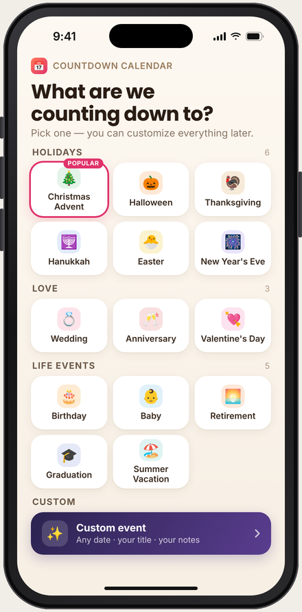
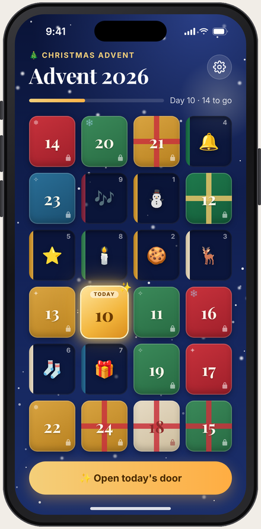
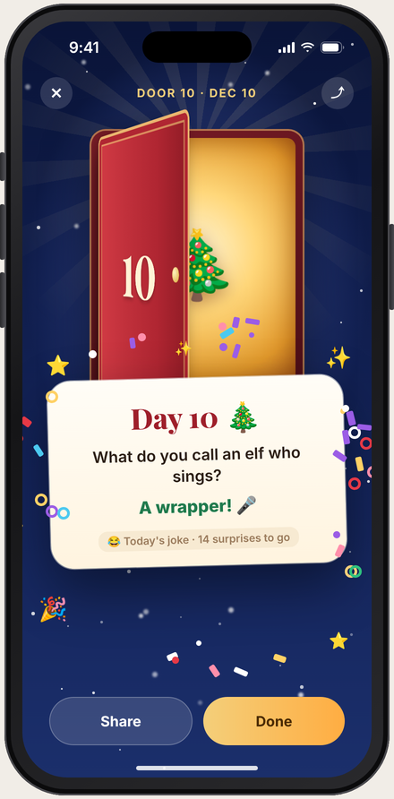
These pictures are design previews made from the app's screens. Your phone may look a little different.
Chapter 2How the doors work
- Doors unlock at midnight, your local time, on their own day. Door 1 is the first day, door 2 the next, and so on.
- Tap a door that's ready and it opens with an animation (plus a little buzz, if haptics are on). Behind it is that day's message and its surprise animation.
- Tap a door that isn't ready yet and it wiggles at you and tells you when to come back. No peeking!
- Opened doors stay open. Tap one again any time to reread it.
- Jokes come in two parts. If a message has two lines, the first line is the setup and the second is the punchline, which waits behind a tap.
- The last door is the big finale, with its own celebration and confetti: "Merry Christmas!", "Wedding Day!", "Happy Birthday!" and so on.
- Holiday dates figure themselves out. Easter, Thanksgiving (the fourth Thursday of November) and Hanukkah are calculated every year. Hanukkah's doors are Night 1 to Night 8, and Hanukkah is worked out from the Hebrew calendar.
Door labels
Holiday calendars like Advent and Halloween show the day of the month on each door. Calendars that end on a date you pick (a wedding, a birthday, a trip) count down: "12 days to go," "1 day to go," then the big day.
Preview mode (the secret switch for grown-ups)
Want to see every surprise before you give a calendar away? Press and hold the calendar's title for about a second. Every door unlocks so you can try them all, and a Close All button (Android: Reset doors) appears to shut them again. Press and hold the title again to leave. Preview mode never unlocks doors on a gift-locked calendar someone sent you. That would spoil the fun!
Chapter 3The 15 calendar types
Every type comes with its own starter notes, finale, animations and suggested color themes, ready to go. Change anything you like.
| Type | Ends on | Doors (start, range) | Price |
|---|---|---|---|
| 🎄 Christmas Advent | Starts Dec 1 (you can change it) | 24 (24–25) | Free |
| 🕎 Hanukkah | 8 nights, from the Hebrew calendar | 8 | Free |
| 🎃 Halloween | Starts Oct 1 | 31 (1–31) | Holiday Pack |
| 🦃 Thanksgiving | The 4th Thursday of November | 30 (1–60) | Holiday Pack |
| 🐣 Easter | Easter Sunday, worked out each year | 14 (1–50) | Holiday Pack |
| 🎆 New Year's Eve | Dec 31 | 7 (1–31) | Holiday Pack |
| 🎂 Birthday | The birthday | 30 (7–100) | Special Occasions |
| 🎓 Graduation | Graduation day | 30 (7–100) | Special Occasions |
| 🏖️ Vacation | The day the trip starts | 30 (7–100) | Special Occasions |
| 💍 Wedding | The wedding day | 30 (7–100) | Special Occasions |
| 💞 Anniversary | The anniversary | 30 (7–100) | Special Occasions |
| 💘 Valentine's Day | Feb 14 | 14 (1–14) | Holiday Pack |
| 👶 Baby on the way | The due date | 40 (7–280) | Special Occasions |
| 🌅 Retirement | The last day of work | 30 (7–100) | Special Occasions |
| ✨ Custom | Any date, with your own title | 30 (1–365) | Special Occasions |
Prices are one-time, shown in US dollars as currently set in the App Store and Google Play. Your store shows the price in your own currency. The Holiday Pack and the Special Occasions Pack are $1.99 each; Everything ($2.99) unlocks both packs plus every paid door style. More in Chapter 10.
Yearly holidays roll over by themselves. If this year's Easter or Valentine's Day has already passed, a new calendar is set up for the next one, not a calendar full of old open doors.
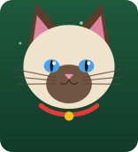
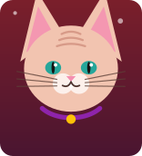
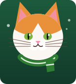
Chapter 4Make it yours: Settings
Tap the gear at the top right of any calendar you can edit. Here's what you'll find.
📅 Calendar and dates
Change the type, title, date and number of doors. For Advent and Halloween you can also move the first door. Changing the type asks first, because it replaces the current doors.
📝 Details
The names and facts that make it personal: partner names, years married, the birthday person and their age, the baby's name and parents, the graduate and school, the retiree, the trip and travelers, or a custom title.
🎨 Theme
21 color themes, from Classic Night and Candy Cane to Spooky Night, Ruby, Sunny Beach, Golden Hour and Blue & Silver. Each type's suggested themes are listed first.
🚪 Door style
How the doors look and open: Classic, Cats, Dogs, Race Cars, Dinosaurs, Rocket Ships, Trucks or Farm Animals. Chapter 5 is all about them.
✨ Feel
Haptics (a little buzz when a door opens) and Reduce animations (calm fades instead of big moves).
⏰ Reminder
A daily "Door N is ready!" nudge at the time you choose. See Chapter 7.
Edit each door
Open Edit each door (Android: Daily messages) and tap any day to change its message and pick its animation. There are 75 to choose from, and any animation works with any type. You can also give a single door its own door style and look.
Little magic words fill themselves in when the door opens:
| Type this | And the door shows |
|---|---|
{days} | "12 days" (or "1 day") until the last door |
{name}, {age} | The birthday person, baby, graduate or retiree, and the age they're turning |
{partner}, {years}, {ordinal} | Your partner's name (the name after the "&", so "Alex" in "Sam & Alex"), years married, and "25th" |
{destination}, {travelers} | Where you're going and who's coming |
Put a joke on two lines and the second line becomes the tap-to-reveal punchline.
Start over: Restore default messages (Android: Reset to defaults) brings back the starter notes, animations and theme; names and dates stay. Close all doors re-closes every door.
Chapter 5Door styles (meet the cats and dogs)
A door style changes how your doors look and how they open. It works with any calendar type and any color theme. Find it in Settings › Door style, where every style has a live preview.
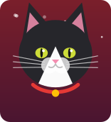
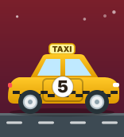
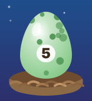
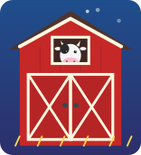
| Style | The closed door | How it opens | Price |
|---|---|---|---|
| 🚪 Classic | The original paneled door with a bow | Swings open on its hinge | Free |
| 🐱 Cats | 24 cats, never the same one twice in a row | A cat flap that swings up | Free |
| 🐶 Dogs | 12 dogs, never the same one twice in a row | A pet flap that swings up | Free |
| 🏎️ Race Cars | 6 cars, from a racer to a hot rod | A car door that swings out | Everything |
| 🦖 Dinosaurs | Speckled eggs in a nest | The egg cracks and hatches | Everything |
| 🚀 Rockets | Portholes onto planets and stars | The hatch pops open | Everything |
| 🚚 Trucks | Dump trucks and garages | Bed tips, or garage rolls up | Everything |
| 🐮 Farm | A barn with a cow, chicken, pig, sheep or horse | The barn doors swing open | Everything |
The cats: tabby, orange, calico, tuxedo, black, fluffy white, Siamese, gray, kitten, Persian, Maine Coon, striped, Bengal, Russian Blue (with a bell), Scottish Fold (with glasses), Sphynx, ginger kitten (in a Santa hat), tortoiseshell, snowshoe, lilac point (with a flower), black kitten (with a bow), sleepy cat (in a nightcap), cat in a scarf, and silver tabby (in a bow tie). A 24-door Advent shows all 24. The dogs: golden retriever, black Lab, Dalmatian, beagle, corgi, poodle, husky, dachshund, pug, border collie, Chihuahua and a Santa-hat puppy.
When a door opens, the style's characters join in for a second or two above the surprise: a cat bats a paw, a puppy wags, a farm animal says hello, a dino stomps and roars, a car zooms past, a rocket lifts off, a truck tips out confetti. They never cover the note. The other styles rotate five or six looks.
Mix in fun facts & jokes
Turn on Mix in fun facts & jokes for this style under the style picker, and the starter notes become kid-friendly facts and jokes about that style (27 or 28 of them). If you've already written your own messages, the app asks first: Keep My Messages, Replace Them Too, or Cancel. Turn the switch off and the starter notes come back. Your own messages are never touched. The last door always keeps its big finale.
One door, different style: in Edit each door, pick a door and choose its Door style and Look ("Which cat? Calico"). Got a calendar in a style you don't own? It always shows the sender's style, free.
Chapter 6Help me write the notes
Staring at 30 blank doors? The guided interview asks you a few friendly questions, skip any you like, and then writes a note for every door from your answers. It works right on your phone: no AI service, no internet, and your answers never leave your device. Only the finished notes go into the calendar.
Works with: Wedding, Anniversary, Valentine's Day, Birthday (with a Kid or Grown-up tone), Baby, Graduation, Retirement, Vacation and Custom.
- Open Settings › Guided interview (Android: Help me write the notes).
- For a wedding, choose who's writing: Bride, Groom or Partner. For a birthday, pick the Kid or Grown-up style.
- Answer the questions. Some examples:
- Wedding: "Where did you two first meet?" … "One promise you want to make to them?"
- Birthday: "What's their favorite thing right now?"
- Vacation: "What's the one thing you have to eat?"
- Retirement: "What's a funny work story about them?"
- iPhone and iPad: all the questions sit on one page. Tap Write My 30 Messages. Android: one question per screen with Skip, then a preview where you can Regenerate, edit any note, and accept.
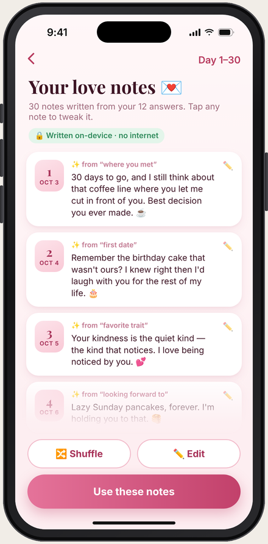
On a wedding calendar, the doors just before the big day are saved for what you're most excited about and your promise, and the wedding day gets the finale. For example, "Sam & Alex" get 30 days of notes ending in "Wedding Day!" If you've edited some notes and run the interview again, it asks whether to keep yours or replace them all.
Chapter 7Daily reminders
Never miss a door. In Settings › Reminder, turn on Daily reminder and choose a Time (it starts at 9:00 AM). The first time, your phone asks if Door a Day can send notifications.
- On each day a door unlocks, you'll get a notification with the calendar's title and "Door N is ready!" Tap it to open the calendar (Android).
- It never shows the message, so surprises stay surprises.
- Reminders stop after the last door. Yearly holidays start up again next season.
- Reminders are set on your phone itself. There's no push service and no server.
- Reminders belong to your phone, not to the calendar. A reminder never travels with a gift, and someone who receives a gift-locked calendar can still turn on their own.
Very long calendars on iPhone (say, 280 days for a baby) keep reminding as long as you open the app now and then, at least every couple of months. On Android, battery saving can sometimes deliver a reminder a few minutes late.
Chapter 8Sharing and the gift lock
A Door a Day makes a lovely gift for a grandchild, a fiancé or a best friend. Open Settings › Share or send as a gift… (Android: Gift & sharing, or the share icon on the calendar). Christmas Advent and Hanukkah calendars can always be shared for free. Every other calendar you make can be shared for free too, and opening a shared calendar is always free, for every type and every door style.
Three ways to send it
📄 As a file
Sends a .countdown file by Messages, email, AirDrop, Files or any app on your share sheet. Tap the file on the other phone and it opens in the app. On Android you can also Save to Files…
🔳 As a QR code
Shown when the calendar fits (the starter calendars do). The other person opens My Calendars › Scan QR Code and points their camera at your screen, or at a printout.
🔗 As a link
A countdowncalendar:// link for messages. If an app doesn't make it tappable, copy it and use My Calendars › Paste Link (iPhone), or share the text to the app (Android).
iPhone and Android get along. The file, link and QR code work in both directions. Open a calendar you already have (say, an updated copy) and the app asks Replace your copy? Tap Replace, Keep Both or Cancel.
🎁 Gift lock and the "From" line
- Set From, for example "From Grandma ❤️" or "From Sam & Alex". It shows on the calendar and on every surprise.
- Turn on Gift lock.
- Share it.
Whoever receives a gift-locked calendar can't edit it, can't open future doors early (not even in preview mode), and its messages aren't listed anywhere. Your own copy stays fully editable.
What's in a shared calendar: the type, title, dates, every door's message and animation, the theme and door styles, the names and details you entered, the From line and the gift-lock setting. What isn't: your interview answers, which doors you've opened, and your reminder settings.
Chapter 9My Calendars
My Calendars is home base: the stack icon at the top left on iPhone and iPad, the list icon on Android. Make as many calendars as you like, and every one keeps its own doors.
- My Calendars: the ones you made and the ones people sent you. Tap one to open it.
- Add a calendar: New Calendar, Scan QR Code, Open a Shared File and Paste Link (iPhone). On Android: ＋ New calendar, Open a file, Scan QR and Preview a kind.
- Samples: read-only examples of every type with all their doors open.
- Delete: swipe left and tap Delete (iPhone), or press and hold (Android). It's removed from this device only.
Can I edit a calendar someone sent me?
It depends. A gift-locked calendar is look-but-don't-touch, though you can still use Feel (haptics and reduce animations) and turn on your own daily reminder. A calendar of a type you haven't unlocked opens and works perfectly, every door, note and animation included; to edit it, the app shows "Shared with you. Get the Holiday Pack, or Everything, to edit it or make your own." (For a Wedding, Birthday or other special-occasion calendar, it names the Special Occasions Pack instead.) Passing it on is free: you can share any calendar you own.
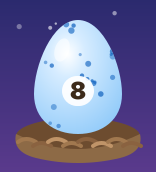
The Dinosaurs style, from egg to peek to "whoa, long neck."
Chapter 10What unlocking adds
Christmas Advent and Hanukkah (sharing too), the Classic, Cats and Dogs styles, and opening any calendar sent to you are free, for keeps. Here's what's waiting if you want more.
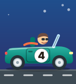
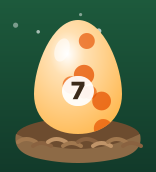
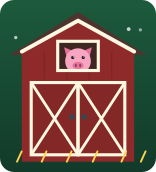
🦖 Doors that hatch, zoom, pop and tip
An egg hatches a stomping baby dino, a car door swings open, a porthole pops on Mars, a dump bed tips, barn doors swing wide. All 5 come with Everything, $2.99
💌 Thirty love notes, written for you
Wedding, Anniversary and Valentine's Day calendars come with the guided interview, so a few answers turn into a note for every door. Valentine's is in the Holiday Pack; Wedding and Anniversary are in the Special Occasions Pack, $1.99 each
💍 The wedding countdown
7 to 100 doors, hearts and rings, and "Wedding Day!" on the big day. Special Occasions Pack, $1.99
✨ Custom: any date, any reason
A classroom countdown to winter break, Grandpa's visit, the new puppy. Up to 365 doors and your own title. Special Occasions Pack, $1.99
| Unlock | What you get | Price |
|---|---|---|
| 🎃 Holiday Pack | Halloween, Thanksgiving, New Year's Eve, Valentine's Day and Easter, with editing | $1.99 |
| 💍 Special Occasions Pack | Wedding, Anniversary, Birthday, Baby, Retirement, Graduation, Vacation and Custom, with editing | $1.99 |
| ⭐ Everything | Both packs plus every paid door style (Race Cars, Dinosaurs, Rocket Ships, Trucks and Farm Animals), with editing. Family Sharing on iPhone and iPad | $2.99 |
How it works: tap anything with a 🔒 to see its preview, then pick the pack that includes it, or Everything. Each one is a one-time purchase through Apple or Google: no subscription, nothing to renew.
Restore Purchases is on every unlock screen. Use it on a new phone or after reinstalling, with the same Apple or Google account. Family Sharing: on iPhone and iPad, Everything is shared with your family group (if it doesn't appear, they tap Restore Purchases). The Holiday and Special Occasions Packs aren't shared. On Android, Google Play doesn't share in-app purchases with a family group, so each Google account buys its own.
Chapter 11Our philosophy and your privacy
We make apps the way we'd want them for our own family. You pay once, a little, for what you want. There are no ads, no subscriptions and no accounts, and we don't collect or share your data. Your calendars stay on your device.
Door a Day comes from Zyzygy, Inc., a small company in Goldthwaite, Texas.
What we don't do
- No ads
- No subscriptions
- No accounts
- No analytics or tracking
- No data collected or shared
The fine print, in plain words
- Everything stays on your device: your calendars, names, messages, which doors you've opened, interview answers and reminder settings. Zyzygy has no server and never receives any of it.
- The internet is only for purchases. Buying or restoring goes through Apple or Google, under their privacy policies. We never see your payment details. Everything else works without the internet.
- Sharing goes only where you send it. A shared calendar travels by the message, email, file or QR code you choose. Remember that it isn't encrypted (see Chapter 8).
- The camera is used only when you tap Scan QR Code, to read a calendar's code. Nothing is saved or sent, and the app asks first.
- Notifications are optional, scheduled on your phone, and off until you turn them on. On Android the app re-schedules them after your phone restarts.
- Backups: your phone's own backup may include the app's data, so a new phone can restore it. That's iCloud on iPhone and iPad, or the backup in your personal Google account on Android if you use it. Those backups belong to your Apple or Google account. Zyzygy never receives or sees them.
- Delete anything from My Calendars, or delete the app to remove everything it stored. Purchases stay with your Apple or Google account.
Door a Day is for families of all ages. Grown-ups make and share the calendars, and kids open the doors. We don't collect personal information from anyone, including children.
Chapter 12Troubleshooting
A door won't open.
It isn't its day yet. Doors unlock at midnight, your local time. Tap it and it tells you when to come back. If your phone's date or time zone is wrong, fix it in your phone's settings.
All the doors are open and I didn't open them!
You may be looking at a sample (it says "Sample calendar · every door is open"), or preview mode is on. Press and hold the title to leave preview mode, then use Close All.
The link isn't tappable.
Some apps don't make custom links tappable. Copy the link and use My Calendars › Paste Link on iPhone, share the text to Door a Day on Android, or ask the sender for the file or QR code.
"Too big for a QR code."
Lots of long messages can make a calendar too big for a QR code. Share it as a file instead.
"This calendar is too big to open (over 2 MB)" or "This doesn't look like a Door a Day."
The file or link is damaged, cut off, or isn't a calendar. Ask the sender to share it again, as a file if possible. Nothing is saved when this happens.
I can't edit a calendar someone sent me.
It's gift-locked, or it's a type you haven't unlocked. See Chapter 9.
My reminder didn't come.
Check that notifications are allowed for Door a Day in your phone's settings and that the reminder is on for that calendar. Reminders only fire on days a new door unlocks. On Android, battery saving can delay one by a few minutes.
Prices didn't load, or the Unlock button is gray.
Prices come from Apple or Google, so you need an internet connection. Tap Prices didn't load. Try again. On Android, the app also needs Google Play.
I bought something, but it's locked on my new phone.
Tap Restore Purchases on any unlock screen, signed in to the same Apple or Google account you bought with.
My new Easter calendar is set for next year.
That's on purpose. Once a holiday has passed, a new calendar counts down to the next one.
Chapter 13FAQ
Does the person I send it to have to pay?
No. Opening a shared calendar is always free, for every type and every door style, gift-locked ones included. They see your door style and every door's surprise exactly as you made them.
Do I have to pay to share?
No. Sharing is free for any calendar you can make, and door styles never affect sharing.
Does Family Sharing work?
For Everything on iPhone and iPad, yes: everyone in your Apple Family Sharing group gets it. The two packs aren't shared, and it shares the purchase only, never your calendars. On Android, Google Play doesn't share in-app purchases with a family group, so each Google account buys its own.
Can I send a calendar from my iPhone to an Android phone?
Yes. Files, links and QR codes work both ways.
Can I add photos behind the doors?
No. Doors hold messages, jokes and animations. The door art is drawn by the app itself.
How many calendars can I make?
As many as you like, of any type you've unlocked.
Can I change a calendar after I've shared it?
Yes, on your copy. Share it again. When they open it, the app asks Replace your copy? (Replace, Keep Both or Cancel).
Will the reminder spoil the surprise?
No. It only says "Door N is ready!" and never shows the message.
How are Hanukkah, Easter and Thanksgiving dates worked out?
The app calculates them every year: Hanukkah from the Hebrew calendar, Easter Sunday with the standard Western method, and Thanksgiving as the fourth Thursday of November (US).
Does it work without the internet?
Yes. Only buying or restoring a purchase needs a connection, and sending a calendar uses whatever you choose to send it with.
Is it accessible?
Every door reads its date and whether it's locked, ready or opened to VoiceOver and TalkBack. Text grows with your phone's text-size setting (Dynamic Type on iPhone and iPad, font size on Android), and Reduce animations swaps every movement for a gentle fade.
The last doorSay hello
Questions, ideas, or a story about the best countdown ever? We'd love to hear it.
support@zyzygy.us
We reply within 2 business days.
Website: zyzygy.us
Door a Day is coming this holiday season to the App Store and Google Play. Prices are set in the stores and shown here as current US prices. © Zyzygy, Inc., Goldthwaite, Texas.
You've reached the end of the guide. No more doors here. (We checked. Twice.)